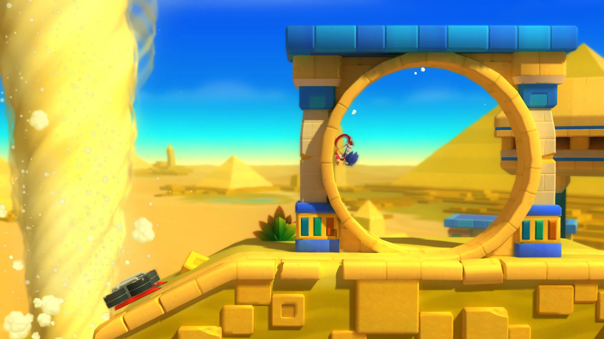
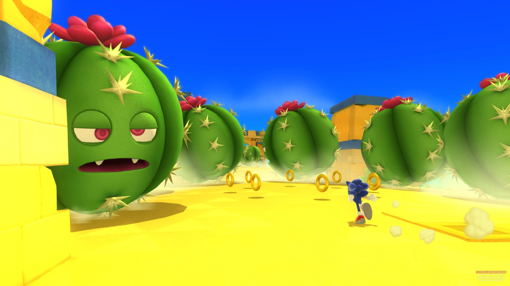
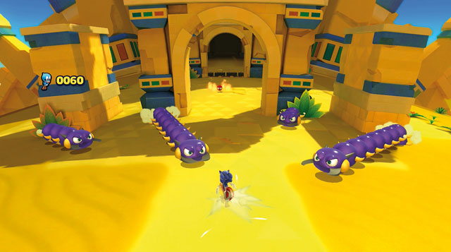

Desert Ruins - Zone1 úr Sonic Lost World (2013)
Tomoya hefur verið sound director fyrir nánast alla nútíma Sonic leiki og hann var það einnig fyrir Sonic Lost World.
Sonic Lost World var tilraunakenndur leikur og frekar ólíkur öðrum Sonic leikjum. Þar að leiðandi er tónlistin aðeins öðruvísi, það er nefnilega miklu meira um djazz!
Tomoya er þekktur fyrir að geta samið í mjög mörgum genres og hér blandar hann saman sinfóníu, djazzi og danstónlist!
Aðeins um leikinn
Sonic Lost World kom 4 árum á eftir Sonic Unleashed. Þó að Sonic Unleashed sé líkast til einn af bestu Sonic leikjum allra tíma fékk hann mikið af neikvæðri gagnrýni því að fólk vildi ekki spila sem vargölturinn.
Þar að leiðandi var SEGA í dálítið vondri stöðu. SEGA ákvöðu að reyna að taka færri áhættur og reyndu að þóknast gagnrýnendum sem fýluðu leikina aldrei til að byrja með.
Sonic Lost World var gerður til að reyna að krækja inn aðdáendur Mario leikjanna. Það virkaði ekkert rosalega vel.

Hvenær spilar lagið?
Í Sonic Lost World eru sjö heimar. Desert Ruins Zone1 er í eyðimerkurheiminum, sem er heimur númer tvö.
Þó að leikurinn sé gallaður þá er ég mjög hrifinn af stílnum. Eyðimerkurheimurinn er sérstaklega flottur, með skærum og fallegum litum og líflegu og cartoony umhverfi. Rústirnar eru mjög flottar og það birtast margir áhugaverðir óvinir eins og sandormar og risastórir kaktusar með augu.
Sonic Lost World hefði getað verið mjög skemmtilegur leikur ef SEGA hefðu bara tekið sér meiri tíma og vandað sig meira.

